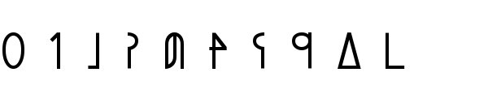

Sitemap
Contents Menu
Return
Introduction
Greetings
Lunar alphabet
Word Order
Tense
Adverb
Copula
Interrogative
Imperative
Pronoun
Preposition
Relative
Accent
Number
Conjunction
Epilogue
There are various languages in Earth, but you can see the Arabic numerals mostly everywhere. Arbazard is in Atolas, so there's no Arabic numerals in your world? Nah, we haven't. We use these numerals instead. (from zero to nine)  The Numerals in Arka 0:yuu 1:ko 2:ta 3:vi 4:val 5:lin 6:kis 7:nol 8:ten 9:los Only zero and one have the same shapes as in the Arabic numerals. I think you can get used to it easily because it has the decimal numeration system. 4, 5, 6 and 7, 8, 9 have "-l," "-n," "-s" at the end of their word regularly. You should utilize the regularity. Counting in Arka is like counting in Japanese. Ten is called "on." Thirteen is the combination of "on" (ten) and "vi" (three); onvi. Twenty is the combination of "ta" (two) and "on" (ten); taon. How do you call a hundred and a thousand? A hundred is "gal." A thousand is "kot." And ten thousand is "sen." For example, "tasen valkot vigal valon lin" for 24,345. Don't say "kosen" when you mean ten thousand. It's just "sen." I see. How do you express "four girls," by the way? It's "val fian." You only have to put a numeral in front of the noun. And you can say "fian val," too. It means "the fourth girl." You put a numeral after nouns and you have an ordinal numeral? It's very interesting!